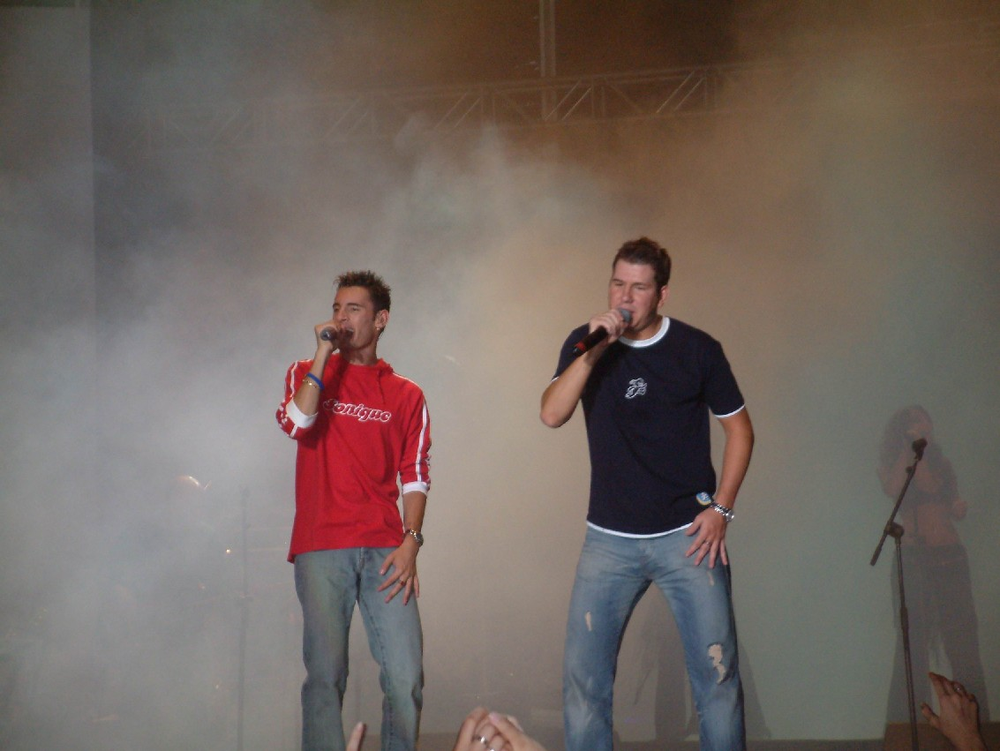
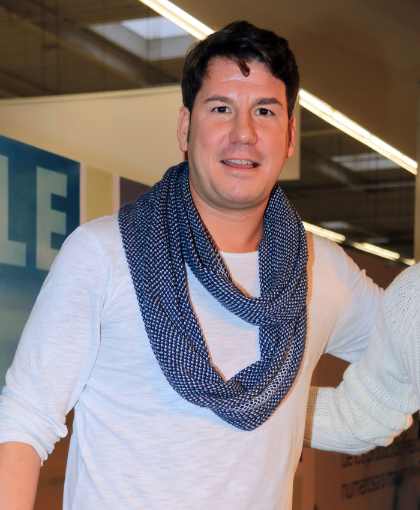

Conoce a Andy y Lucas
Somos Andy y Lucas, originarios de Cádiz y nos gusta crear canciones para nuestro público.

Andy, el guaperas
Andy se encarga de tocar los instrumentos y de dar las entrevistas a la televisiones.
Lucas, la voz cantante
Es el encargado de dar voz a muchas de las canciones y de componerlas todas.
